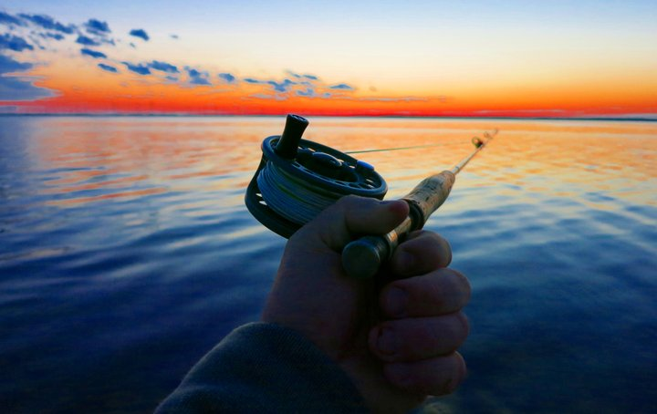

Bada. 400m från oss så har du en underbar sandstrand, långgrunt från stranden eller så kan man gå ut på piren om man vill hoppa i, perfekt för morgon eller kvällsdoppet.
Golf. På cykelavstånd så hittar ni Visby GK, rankad som sveriges bästa bana 2020.
Fiske. Spännande fiske erbjuds både längs kusten och i Västergarn ån, allt inom prommenadavstånd. Vi är ett fiskevänligt boende rekommenderat av Sportfiske förbundet.
Fågelskådning. En km från vårt boende hittar du Paviken, denna gamla vikingahamn är numera en av de fågeltätaste insjöarna på Gotland.